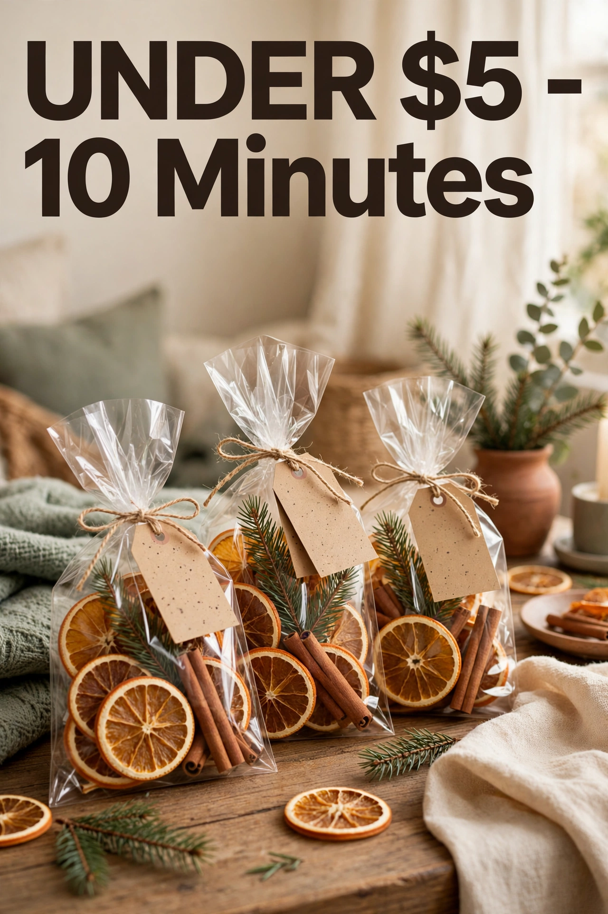
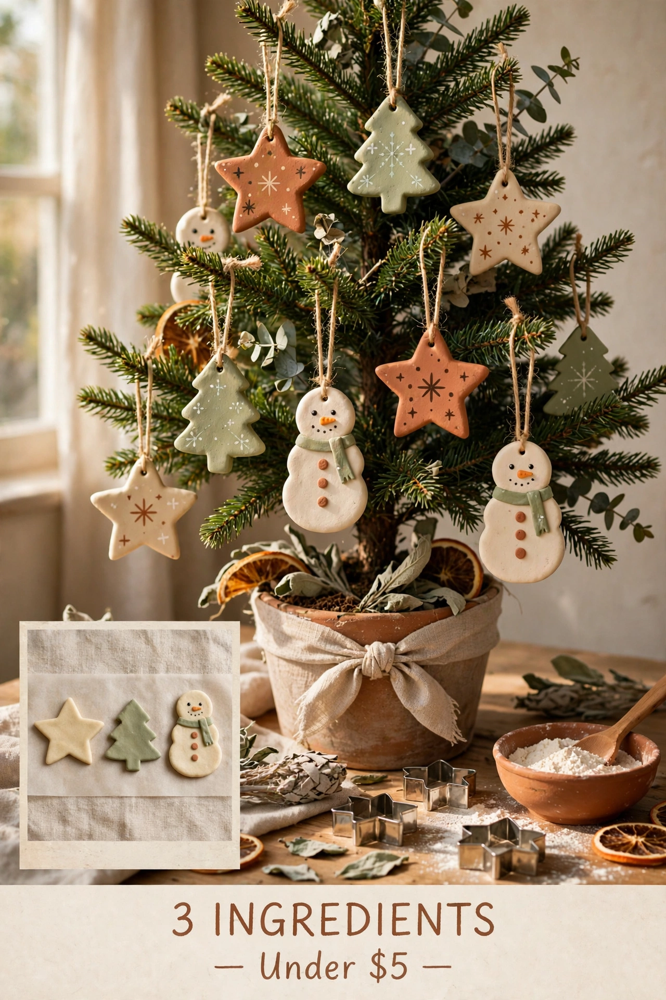
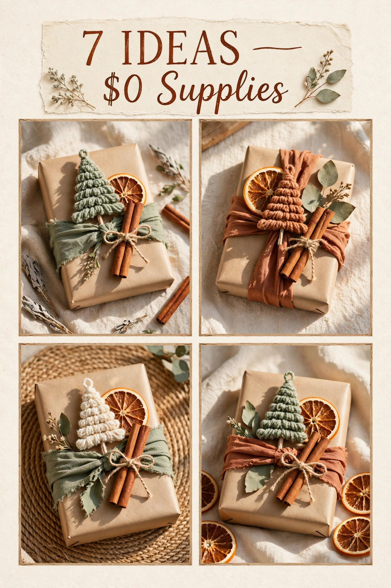
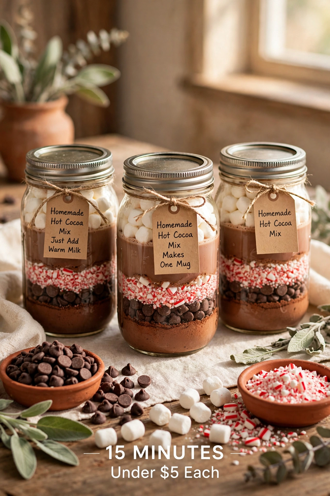
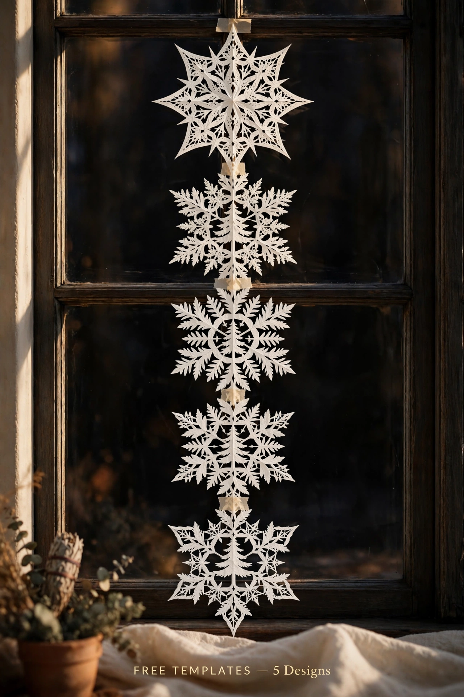

Christmas Crafts Beginner Crafts
Easy Soy Candle in a Mason Jar (Under $10, 45 Minutes)
Melt soy wax, stir in a Christmas scent and pour into a mason jar. A cozy candle and an easy handmade gift.
DIY and Crafts
We collect beginner-friendly projects for real homes, and under every project we write down the time, cost, skill level and supplies. So you can start knowing exactly what you need.
Look through the projectsFresh projects, tested at home, with the same finished photo you saw on Pinterest.
Christmas Crafts Beginner Crafts
Melt soy wax, stir in a Christmas scent and pour into a mason jar. A cozy candle and an easy handmade gift.

DIY Gifts Beginner Crafts
Two pieces of fleece, scissors and tied fringe — no sewing machine, no needle, no experience needed.
Christmas Crafts Beginner Crafts
Three candles, evergreen, pinecones and dried oranges on a wooden tray. No gluing, no wiring.

Furniture Flips Beginner Crafts
A scrap board, four hooks and a little paint turn a messy hallway into an organized winter entryway.

DIY Gifts Christmas Crafts
Dried oranges, cinnamon, cloves and pine in a clear bag — simmer on the stove and the house smells like Christmas.

Christmas Crafts Beginner Crafts
Flour, salt and water — cut stars, trees and snowmen, bake, paint and hang. A cheap keepsake gift.

Christmas Crafts Beginner Crafts
A full wreath in 30 minutes — evergreen, dried oranges, cinnamon and a big bow. No florist skills needed.

DIY Gifts Christmas Crafts
7 ways to make kraft paper look handmade — stamps, yarn trees, dried orange, cinnamon and fabric wrap.

DIY Gifts Christmas Crafts
Layered cocoa, chocolate chips, candy cane and marshmallows in a mason jar, with a free printable tag.

Paper Crafts Beginner Crafts
Fold and cut 5 designs — classic, lacy, star and tree — with free printable templates. Kid-friendly.

Furniture Flips Thrift Flips
A thrift store dresser, chalk paint, new knobs, and a clean finish. Full supply list and mistakes to avoid.

Embroidery Beginner Crafts
Learn 5 basic stitches with a free printable pattern. No experience needed.

DIY Gifts Accessories
The trending bag charm, made at home with beads, wire and a clasp.

Crochet Beginner Crafts
A sturdy everyday tote using only single and double crochet. Includes stitch guide.

Christmas Crafts DIY Gifts
15 handmade gifts for friends, teachers and family. No sewing machine needed for most of them.
DIY and Crafts is for people who want to make something beautiful at home without spending a lot of money or needing years of experience. Every project here is tested at home, with a clear supply list, numbered steps, time and cost, so you know what you are getting into before you start.
We show the finished project first, then the supplies, then the steps in order, including the mistakes we made, so you can avoid them. If a project only works for beginners, or needs a whole weekend, we say so.
Pick a craft, and start with a project that fits your time and budget.
Thrifted dressers and shelves, painted and repaired on a budget.
2 projects
Beginner stitches, free patterns, and simple hoop art.
1 project
Free patterns for bags and home items, using basic stitches first.
1 project
Quick, useful handmade gifts for friends, teachers and family.
6 projects
Handmade gifts and decor, most under 1 hour each.
5 projects
Free templates and easy paper projects for windows, garlands and gift tags.
1 project
15 to 60 minute projects, including bag charms and candles.
1 project